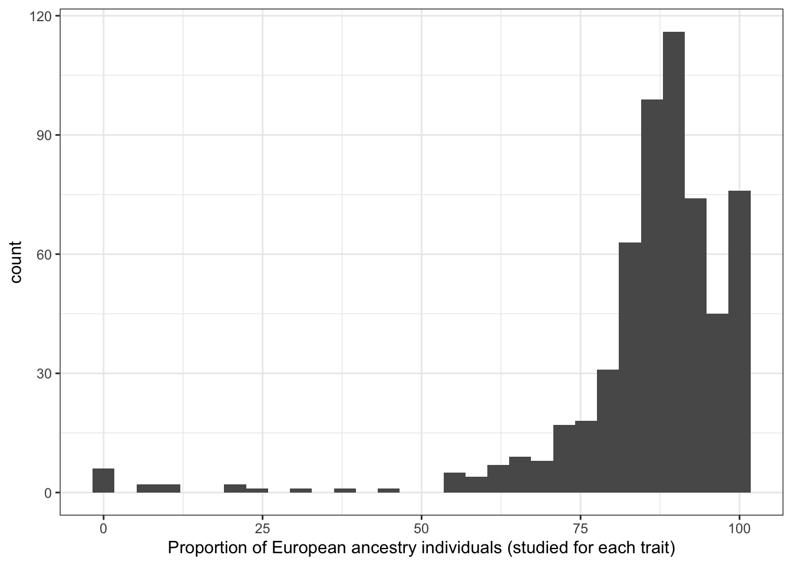

Disease investigated by ancestry
Last updated: 2025-09-11
Checks: 7 0
Knit directory:
genomics_ancest_disease_dispar/
This reproducible R Markdown analysis was created with workflowr (version 1.7.1). The Checks tab describes the reproducibility checks that were applied when the results were created. The Past versions tab lists the development history.
Great! Since the R Markdown file has been committed to the Git repository, you know the exact version of the code that produced these results.
Great job! The global environment was empty. Objects defined in the global environment can affect the analysis in your R Markdown file in unknown ways. For reproduciblity it’s best to always run the code in an empty environment.
The command set.seed(20220216) was run prior to running
the code in the R Markdown file. Setting a seed ensures that any results
that rely on randomness, e.g. subsampling or permutations, are
reproducible.
Great job! Recording the operating system, R version, and package versions is critical for reproducibility.
Nice! There were no cached chunks for this analysis, so you can be confident that you successfully produced the results during this run.
Great job! Using relative paths to the files within your workflowr project makes it easier to run your code on other machines.
Great! You are using Git for version control. Tracking code development and connecting the code version to the results is critical for reproducibility.
The results in this page were generated with repository version 708d5b3. See the Past versions tab to see a history of the changes made to the R Markdown and HTML files.
Note that you need to be careful to ensure that all relevant files for
the analysis have been committed to Git prior to generating the results
(you can use wflow_publish or
wflow_git_commit). workflowr only checks the R Markdown
file, but you know if there are other scripts or data files that it
depends on. Below is the status of the Git repository when the results
were generated:
Ignored files:
Ignored: .DS_Store
Ignored: .Rproj.user/
Ignored: data/.DS_Store
Ignored: data/gwas_catalog/
Ignored: output/gwas_cat/
Ignored: output/gwas_study_info_cohort_corrected.csv
Ignored: output/gwas_study_info_trait_corrected.csv
Ignored: output/gwas_study_info_trait_ontology_info.csv
Ignored: output/gwas_study_info_trait_ontology_info_l1.csv
Ignored: output/gwas_study_info_trait_ontology_info_l2.csv
Ignored: output/trait_ontology/
Ignored: renv/
Untracked files:
Untracked: code/get_term_descendants.R
Untracked: data/gbd/
Untracked: data/who/
Unstaged changes:
Modified: analysis/index.Rmd
Deleted: analysis/level_1_disease_group.Rmd
Deleted: analysis/non_ontology_trait_collapse.Rmd
Deleted: analysis/trait_ontology_collapse.Rmd
Note that any generated files, e.g. HTML, png, CSS, etc., are not included in this status report because it is ok for generated content to have uncommitted changes.
These are the previous versions of the repository in which changes were
made to the R Markdown
(analysis/disease_inves_by_ancest.Rmd) and HTML
(docs/disease_inves_by_ancest.html) files. If you’ve
configured a remote Git repository (see ?wflow_git_remote),
click on the hyperlinks in the table below to view the files as they
were in that past version.
| File | Version | Author | Date | Message |
|---|---|---|---|---|
| Rmd | 708d5b3 | IJbeasley | 2025-09-11 | Add GBD data to disease gwas ancestry investigation |
| html | 437885b | IJbeasley | 2025-08-25 | Build site. |
| Rmd | 31e868c | IJbeasley | 2025-08-25 | Update proportion euro invest for updated disease categories |
| html | 3d94889 | IJbeasley | 2025-08-23 | Build site. |
| Rmd | 48dd80a | IJbeasley | 2025-08-23 | Update proportion ancestry investigated by disease |
| html | 42e854b | IJbeasley | 2025-08-21 | Build site. |
| Rmd | fa9a4da | IJbeasley | 2025-08-21 | Starting test of relationship between proportion european and total sample size |
| html | f5087d2 | IJBeasley | 2025-07-30 | Build site. |
| Rmd | 72172e3 | IJBeasley | 2025-07-30 | Split page into disease by ancest |
| html | 2fd5755 | Isobel Beasley | 2022-02-16 | Build site. |
| Rmd | 7347b5d | Isobel Beasley | 2022-02-16 | Add initial plotting using gwas cat stats |
1 Set up
library(dplyr)
library(data.table)
library(ggplot2)
source(here::here("code/custom_plotting.R"))1.1 Load data
# gwas_study_info = data.table::fread("data/gwas_catalog/gwas-catalog-v1.0.3-studies-r2022-02-02.tsv",
# sep = "\t",
# quote = "")
# gwas_study_info <- fread(here::here("output/gwas_study_info_trait_corrected.csv"))
gwas_study_info <- fread(here::here("output/gwas_cat/gwas_study_info_trait_group_l2.csv"))
gwas_ancest_info <- fread(here::here("data/gwas_catalog/gwas-catalog-v1.0.3.1-ancestries-r2025-07-21.tsv"),
sep = "\t",
quote = "")1.2 Basic data cleaning
# fixing the column names
gwas_study_info = gwas_study_info |>
dplyr::rename_with(~ gsub(" ", "_", .x))
gwas_ancest_info = gwas_ancest_info |>
dplyr::rename_with(~ gsub(" ", "_", .x))
# making sure arranged by DATE (oldest at the top)
gwas_ancest_info = gwas_ancest_info |>
dplyr::arrange(DATE)
gwas_study_info = gwas_study_info |>
dplyr::arrange(DATE)1.3 NA for number of individuals
# 44 studies / 44 rows
gwas_ancest_info |>
dplyr::filter(is.na(NUMBER_OF_INDIVIDUALS)) |>
nrow()[1] 44# from only 24 gwas papers
gwas_ancest_info |>
dplyr::filter(is.na(NUMBER_OF_INDIVIDUALS)) |>
select(PUBMED_ID) |>
distinct() |>
nrow()[1] 24gwas_ancest_info |>
dplyr::filter(PUBMED_ID == 28679651) |>
select(INITIAL_SAMPLE_DESCRIPTION,
REPLICATION_SAMPLE_DESCRIPTION,
BROAD_ANCESTRAL_CATEGORY) |>
distinct() INITIAL_SAMPLE_DESCRIPTION REPLICATION_SAMPLE_DESCRIPTION
<char> <char>
1: 404 cases, controls <NA>
2: 194 cases, controls <NA>
3: 426 cases, controls <NA>
4: 85 cases, controls <NA>
5: 535 cases, controls <NA>
6: 345 cases, controls <NA>
7: 835 cases, controls <NA>
8: 844 cases, controls <NA>
9: 447 cases, controls <NA>
BROAD_ANCESTRAL_CATEGORY
<char>
1: NR
2: NR
3: NR
4: NR
5: NR
6: NR
7: NR
8: NR
9: NR# 28679651 - problem seems to be that number of controls per disease not specifically listed
# see https://pubmed.ncbi.nlm.nih.gov/28679651/
# although paper they cite as where data comes from (https://www.nature.com/articles/leu2016387#Tab1)
# discloses: 1229 AL amyloidosis patients from Germany, UK and Italy, and 7526 healthy local controls1.3.1 Filter out NA number of individuals
gwas_ancest_info =
gwas_ancest_info |>
dplyr::filter(!is.na(NUMBER_OF_INDIVIDUALS))1.4 Set up - add trait information to ancestry information
gwas_ancest_info =
left_join(
gwas_ancest_info,
gwas_study_info |> select(STUDY_ACCESSION,
COHORT,
MAPPED_TRAIT,
DISEASE_STUDY,
MAPPED_TRAIT_CATEGORY,
BACKGROUND_TRAIT_CATEGORY,
collected_all_disease_terms),
by = "STUDY_ACCESSION"
)
gwas_ancest_info = gwas_ancest_info |> filter(DISEASE_STUDY == T)2 Top traits
2.1 Top traits by number of pubmed ids - including non-disease traits
The traits with the most number of pubmed ids are:
n_studies_trait = gwas_study_info |>
dplyr::select(MAPPED_TRAIT, MAPPED_TRAIT_URI, PUBMED_ID) |>
dplyr::mutate(MAPPED_TRAIT = stringr::str_split(MAPPED_TRAIT, ",\\s*")) |>
tidyr::unnest_longer(MAPPED_TRAIT) |>
dplyr::distinct() |>
dplyr::group_by(MAPPED_TRAIT, MAPPED_TRAIT_URI) |>
dplyr::summarise(n_studies = dplyr::n()) |>
dplyr::arrange(desc(n_studies))`summarise()` has grouped output by 'MAPPED_TRAIT'. You can override using the
`.groups` argument.head(n_studies_trait)# A tibble: 6 × 3
# Groups: MAPPED_TRAIT [6]
MAPPED_TRAIT MAPPED_TRAIT_URI n_studies
<chr> <chr> <int>
1 high density lipoprotein cholesterol measurement http://www.ebi.ac.… 134
2 body mass index http://www.ebi.ac.… 133
3 triglyceride measurement http://www.ebi.ac.… 129
4 low density lipoprotein cholesterol measurement http://www.ebi.ac.… 119
5 type 2 diabetes mellitus http://purl.obolib… 118
6 total cholesterol measurement http://www.ebi.ac.… 1032.2 Top traits by number of pubmed ids - disease traits only
n_studies_trait = gwas_study_info |>
dplyr::filter(DISEASE_STUDY == T) |>
dplyr::select(collected_all_disease_terms, PUBMED_ID) |>
dplyr::mutate(collected_all_disease_terms = stringr::str_split(collected_all_disease_terms, ",\\s*")) |>
tidyr::unnest_longer(collected_all_disease_terms) |>
dplyr::distinct() |>
dplyr::group_by(collected_all_disease_terms) |>
dplyr::summarise(n_studies = dplyr::n()) |>
dplyr::arrange(desc(n_studies))
head(n_studies_trait)# A tibble: 6 × 2
collected_all_disease_terms n_studies
<chr> <int>
1 type 2 diabetes mellitus 192
2 major depressive disorder 145
3 schizophrenia 142
4 breast cancer 135
5 alzheimers disease 131
6 asthma 124dim(n_studies_trait)[1] 2195 23 Make ancestry groups
Here we make the column ‘ancestry_group’ in the gwas_study_info datasets, ‘ancestry_group’ defines the broad ancestry group (like in Martin et al. 2019, European, Greater Middle Eastern etc.) that each group of individuals belongs to.
grouped_ancest = vector()
broad_ancest_cat = unique(gwas_ancest_info$BROAD_ANCESTRAL_CATEGORY)
for(study_ancest in broad_ancest_cat){
grouped_ancest[study_ancest] = group_ancestry_fn(study_ancest)
}
grouped_ancest_map = data.frame(ancestry_group = grouped_ancest,
BROAD_ANCESTRAL_CATEGORY = broad_ancest_cat
)
print("See some example mappings between BROAD_ANCESTRAL_CATEGORY and ancestry_group")[1] "See some example mappings between BROAD_ANCESTRAL_CATEGORY and ancestry_group"print(dplyr::slice_sample(grouped_ancest_map, n = 5)) ancestry_group
European European
European, African unspecified Multiple
European, Hispanic or Latin American, African unspecified, Asian unspecified Multiple
East Asian Asian
European, Asian unspecified, African American or Afro-Caribbean, Greater Middle Eastern (Middle Eastern, North African or Persian), Oceanian, Native American, Other, Other admixed ancestry Multiple
BROAD_ANCESTRAL_CATEGORY
European European
European, African unspecified European, African unspecified
European, Hispanic or Latin American, African unspecified, Asian unspecified European, Hispanic or Latin American, African unspecified, Asian unspecified
East Asian East Asian
European, Asian unspecified, African American or Afro-Caribbean, Greater Middle Eastern (Middle Eastern, North African or Persian), Oceanian, Native American, Other, Other admixed ancestry European, Asian unspecified, African American or Afro-Caribbean, Greater Middle Eastern (Middle Eastern, North African or Persian), Oceanian, Native American, Other, Other admixed ancestrygwas_ancest_info = dplyr::left_join(
gwas_ancest_info,
grouped_ancest_map,
by = "BROAD_ANCESTRAL_CATEGORY")
gwas_ancest_info = gwas_ancest_info |>
dplyr::mutate(ancestry_group = factor(ancestry_group, levels = ancestry_levels))3.1 Check: How many individuals in each ancestry group?
Expecting highest to be in European
total_gwas_n =
gwas_ancest_info$NUMBER_OF_INDIVIDUALS |> sum(na.rm = T)
print("Total numbers (in millions) per ancestry group")[1] "Total numbers (in millions) per ancestry group"gwas_ancest_info |>
dplyr::group_by(ancestry_group) |>
dplyr::summarise(n = sum(NUMBER_OF_INDIVIDUALS, na.rm = TRUE)/10^6) |>
dplyr::mutate(prop = n* 10^6/total_gwas_n) |>
dplyr::arrange(desc(n)) # A tibble: 9 × 3
ancestry_group n prop
<fct> <dbl> <dbl>
1 European 5064. 0.865
2 African 316. 0.0539
3 Asian 150. 0.0256
4 Hispanic/Latin American 135. 0.0231
5 Not reported 118. 0.0201
6 Multiple 71.8 0.0123
7 Other 0.755 0.000129
8 Middle Eastern 0.295 0.0000503
9 Oceanic 0.0388 0.000006623.2 Plot number of individuals per ancestry group over time
gwas_ancest_info |>
dplyr::group_by(ancestry_group) |>
dplyr::mutate(ancest_cumsum = cumsum(as.numeric(NUMBER_OF_INDIVIDUALS))) |>
add_final_totals() |>
# select(DATE, ancest_cumsum, ancestry_group, NUMBER_OF_INDIVIDUALS) |>
ggplot(aes(x=DATE,
y=ancest_cumsum/(10^6),
fill = ancestry_group
)
) +
geom_area(position = 'stack') +
scale_x_date(date_labels = '%Y',
date_breaks = "2 years"
) +
theme_classic() +
labs(x = "Year",
y = "Individuals in GWAS catalog (millions)") +
scale_fill_manual(values = ancestry_colors, name='Ancestry group') 
4 Plot number of individuals per ancestry group for a single trait
4.1 Select trait
gwas_ancest_info_plot =
gwas_ancest_info %>%
filter(!is.na(NUMBER_OF_INDIVIDUALS)) |>
filter(MAPPED_TRAIT == 'high density lipoprotein cholesterol measurement')
print("Total numbers (in millions) per ancestry group - for high density lipoprotein cholesterol measurement")[1] "Total numbers (in millions) per ancestry group - for high density lipoprotein cholesterol measurement"gwas_ancest_info_plot %>%
group_by(ancestry_group) %>%
summarise(n = sum(NUMBER_OF_INDIVIDUALS, na.rm = TRUE)/10^6)# A tibble: 4 × 2
ancestry_group n
<fct> <dbl>
1 European 0.00310
2 African 0.00319
3 Multiple 0.00255
4 Not reported 0.001044.2 Plot
gwas_ancest_info_plot =
gwas_ancest_info_plot %>%
group_by(ancestry_group) %>%
mutate(ancest_cumsum = cumsum(as.numeric(NUMBER_OF_INDIVIDUALS)))
gwas_ancest_info_plot = add_final_totals(gwas_ancest_info_plot)
gwas_ancest_info_plot |>
ggplot(aes(x=DATE, y=ancest_cumsum/(10^6), fill = ancestry_group)) +
geom_area(position = 'stack') +
scale_x_date(date_labels = '%Y', date_breaks = "1 years") +
theme_classic() +
labs(x = "Year", y = "Individuals in GWAS catalog (millions)") +
scale_fill_manual(values = ancestry_colors, name='Ancestry group') 
| Version | Author | Date |
|---|---|---|
| 437885b | IJbeasley | 2025-08-25 |
5 Proportion European per trait
5.1 Proportion European overall
euro_n = gwas_ancest_info |>
filter(ancestry_group == "European") |>
pull(NUMBER_OF_INDIVIDUALS) |>
sum(na.rm = T)
total_n = gwas_ancest_info |>
pull(NUMBER_OF_INDIVIDUALS) |>
sum(na.rm = T)
100 * euro_n / total_n[1] 86.480425.2 Proportion European per trait
prop_euro = vector()
total_n_vec = vector()
gwas_ancest_trait_info = gwas_ancest_info |>
dplyr::filter(DISEASE_STUDY == T) |>
dplyr::select(collected_all_disease_terms,
PUBMED_ID, ancestry_group, NUMBER_OF_INDIVIDUALS) |>
dplyr::mutate(collected_all_disease_terms = stringr::str_split(collected_all_disease_terms, ",\\s*")) |>
tidyr::unnest_longer(collected_all_disease_terms) |>
dplyr::distinct()
n_studies_trait = n_studies_trait |>
dplyr::filter(n_studies > 2) |>
dplyr::filter(collected_all_disease_terms != "")
for(trait in n_studies_trait$collected_all_disease_terms){
euro_n = gwas_ancest_trait_info |>
filter(ancestry_group == "European") |>
filter(collected_all_disease_terms %in% trait) |>
pull(NUMBER_OF_INDIVIDUALS) |>
sum(na.rm = T)
total_n = gwas_ancest_trait_info |>
filter(collected_all_disease_terms %in% trait) |>
pull(NUMBER_OF_INDIVIDUALS) |>
sum(na.rm = T)
prop_euro[trait] = 100 * euro_n / total_n
total_n_vec[trait] = total_n
}
prop_euro_df = data.frame(prop_euro = prop_euro,
trait = names(prop_euro),
total_n = total_n_vec)
prop_euro_df = left_join(prop_euro_df,
n_studies_trait |> rename(trait = collected_all_disease_terms),
by = "trait")prop_euro_df |> ungroup() |> dplyr::slice_min(prop_euro, n = 10) prop_euro trait total_n n_studies
1 0.0000000 sickle cell anemia 136174 13
2 0.0000000 leprosy 97690 7
3 0.0000000 esophageal squamous cell cancer 84915 5
4 0.0000000 hyperuricemia 65979 4
5 0.0000000 rare dyslipidemia 218111 4
6 0.0000000 thyrotoxic periodic paralysis 14935 4
7 0.0000000 kashin-beck disease 5653 3
8 0.0000000 moyamoya disease 7290 3
9 0.3036782 schizoaffective disorder 146866 4
10 3.1554273 heroin dependence 11092 3prop_euro_df |> ungroup() |> dplyr::slice_max(prop_euro, n = 10) prop_euro trait total_n
1 100 autoimmune disease 1951082
2 100 polymyalgia rheumatica 3827751
3 100 temporal arteritis 1732337
4 100 adult onset asthma 4544076
5 100 femoral hernia 2418409
6 100 follicular lymphoma 1816917
7 100 abnormal delivery 2068918
8 100 alcoholic liver cirrhosis 34408
9 100 cholangitis 2016250
10 100 hip pain 2216824
11 100 skin sensitivity to sun 450574
12 100 bipolar ii disorder 1392151
13 100 chronic cystitis 1674324
14 100 common cold 896545
15 100 exanthem 855033
16 100 gingival bleeding 1094882
17 100 granulomatosis with polyangiitis 1312860
18 100 infectious mononucleosis 1077967
19 100 knee pain 1980067
20 100 language impairment 10185
21 100 lyme disease 1070058
22 100 malignant urinary system neoplasm 1699729
23 100 mitral valve prolapse 1279142
24 100 myelodysplastic syndrome 476950
25 100 neoplasm of mature b-cells 38863
26 100 post term pregnancy 1250769
27 100 self-injurious behavior 615417
28 100 small intestine cancer 2086985
29 100 stress-related disorder 790227
30 100 uveal melanoma 385942
31 100 abnormal thrombosis 855372
32 100 abnormality of head or neck 1313403
33 100 abnormality of the cervical spine 1457960
34 100 abnormality of the skeletal system 4223610
35 100 acute kidney failure 1675254
36 100 acute myocardial infarction 1400430
37 100 antepartum hemorrhage 1144445
38 100 anti-neutrophil antibody associated vasculitis 28421
39 100 arteritis 1307617
40 100 articular cartilage disorder 1308890
41 100 bartholin gland disease 742865
42 100 benign neoplasm of parathyroid gland 1315048
43 100 binge eating 53463
44 100 cancer aggressiveness 53002
45 100 cancer of gallbladder and extrahepatic biliary tract 1301135
46 100 chickenpox 1187938
47 100 common variable immunodeficiency 31849
48 100 congenital anomaly of the great arteries 1314819
49 100 cutaneous squamous cell cancer 1777571
50 100 cystic fibrosis associated meconium ileus 21422
51 100 dental pulp disease 1101239
52 100 egg allergy 8361
53 100 esophagitis 1048652
54 100 ewing sarcoma 15632
55 100 fecal incontinence 859430
56 100 female reproductive organ cancer 1442506
57 100 frontal fibrosing alopecia 12251
58 100 functional laterality 1278981
59 100 glossitis 1310001
60 100 granulomatous dermatitis 1240053
61 100 heart aneurysm 1284432
62 100 hypermobility syndrome 1285724
63 100 hyperventilation 1314418
64 100 iridocyclitis 1013674
65 100 juvenile dermatomyositis 40362
66 100 labyrinthitis 1239907
67 100 lower respiratory tract disease 1477048
68 100 male breast cancer 428912
69 100 marginal zone b-cell lymphoma 113749
70 100 mastitis 1068118
71 100 mastoiditis 1311145
72 100 milk allergy 8423
73 100 multiple system atrophy 21730
74 100 multisite chronic pain 1550596
75 100 nystagmus 854184
76 100 odontogenic cyst 1305471
77 100 osteochondritis dissecans 844059
78 100 ovarian mucinous adenocarcinoma 175155
79 100 ovarian neoplasm 918667
80 100 peritonsillar abscess 1347550
81 100 postpartum depression 451259
82 100 radiation-induced disorder 408687
83 100 self-injurious ideation 338014
84 100 shingles 1252017
85 100 shoulder impingement syndrome 1231437
86 100 skin cancer in situ 1294876
87 100 sporadic creutzfeld jacob disease 530079
88 100 staphylococcus aureus infection 53598
89 100 stenosing tenosynovitis 1379279
90 100 toothache 1090805
91 100 urgency urinary incontinence 22812
92 100 uterine inflammatory disease 934387
93 100 vomiting 1602869
n_studies
1 8
2 7
3 7
4 6
5 6
6 6
7 5
8 5
9 5
10 5
11 5
12 4
13 4
14 4
15 4
16 4
17 4
18 4
19 4
20 4
21 4
22 4
23 4
24 4
25 4
26 4
27 4
28 4
29 4
30 4
31 3
32 3
33 3
34 3
35 3
36 3
37 3
38 3
39 3
40 3
41 3
42 3
43 3
44 3
45 3
46 3
47 3
48 3
49 3
50 3
51 3
52 3
53 3
54 3
55 3
56 3
57 3
58 3
59 3
60 3
61 3
62 3
63 3
64 3
65 3
66 3
67 3
68 3
69 3
70 3
71 3
72 3
73 3
74 3
75 3
76 3
77 3
78 3
79 3
80 3
81 3
82 3
83 3
84 3
85 3
86 3
87 3
88 3
89 3
90 3
91 3
92 3
93 3prop_euro_df |> ungroup() |> dplyr::slice_max(total_n, n = 5) prop_euro trait total_n n_studies
1 86.59309 covid-19 139881329 59
2 81.94053 major depressive disorder 65981374 145
3 79.56670 type 2 diabetes mellitus 51963674 192
4 85.99261 asthma 41016859 124
5 63.19664 coronary artery disease 34075110 1015.2.1 Distribution of proportion european (per disease trait)
prop_euro_df$prop_euro |> summary() Min. 1st Qu. Median Mean 3rd Qu. Max.
0.00 82.92 88.69 85.46 93.77 100.00 prop_euro_df |>
ggplot(aes(x = prop_euro)) +
geom_histogram() +
theme_bw()`stat_bin()` using `bins = 30`. Pick better value with `binwidth`.
| Version | Author | Date |
|---|---|---|
| 437885b | IJbeasley | 2025-08-25 |
5.2.2 Distribution of total number of individuals (per disease trait)
print("Total number of individuals (studied for each trait) - in millions")[1] "Total number of individuals (studied for each trait) - in millions"c(prop_euro_df$total_n / 10^6) |> summary() Min. 1st Qu. Median Mean 3rd Qu. Max.
0.00137 1.04003 1.84009 3.30622 3.33433 139.88133 prop_euro_df |>
ggplot(aes(x = total_n)) +
geom_histogram() +
theme_bw() +
labs(x = "Total number of individuals (studied for this trait)")`stat_bin()` using `bins = 30`. Pick better value with `binwidth`.
| Version | Author | Date |
|---|---|---|
| 437885b | IJbeasley | 2025-08-25 |
5.2.3 Proportion european - vs. total number of individuals
print("Proportion European vs. total number of individuals - spearman correlation")[1] "Proportion European vs. total number of individuals - spearman correlation"cor(prop_euro_df$prop_euro, prop_euro_df$total_n,
method = "spearman",
use = "pairwise.complete.obs")[1] -0.07571652print("Proportion European vs. total number of individuals - spearman correlation - only traits with > 5 studies")[1] "Proportion European vs. total number of individuals - spearman correlation - only traits with > 5 studies"prop_euro_df |>
filter(n_studies > 5) |>
summarise(cor = cor(prop_euro, total_n,
method = "spearman",
use = "pairwise.complete.obs")) cor
1 0.0266612prop_euro_df |>
ggplot(aes(x = total_n, y = prop_euro)) +
geom_point() +
theme_bw() +
labs(x = "Total number of individuals (studied for this trait)",
y = "Proportion of European ancestry idividuals (studied for this trait)")
| Version | Author | Date |
|---|---|---|
| 437885b | IJbeasley | 2025-08-25 |
5.2.4 Proportion european - vs. number of studies
print("Proportion European vs. number of studies - spearman correlation")[1] "Proportion European vs. number of studies - spearman correlation"cor(prop_euro_df$prop_euro, prop_euro_df$n_studies,
method = "spearman",
use = "pairwise.complete.obs")[1] -0.1867939print("Proportion European vs. number of studies - spearman correlation - only traits with > 5 studies")[1] "Proportion European vs. number of studies - spearman correlation - only traits with > 5 studies"prop_euro_df |>
filter(n_studies > 5) |>
summarise(cor = cor(prop_euro, n_studies,
method = "spearman",
use = "pairwise.complete.obs")
) cor
1 -0.1592635prop_euro_df |>
ggplot(aes(x = n_studies, y = prop_euro)) +
geom_point() +
theme_bw() +
labs(x = "Total number of unique PUBMED IDs for this trait",
y = "Proportion of European ancestry idividuals (studied for this trait)")
5.2.5 Number of individuals vs number of studies
print("Total number of individuals vs. number of studies - spearman correlation")[1] "Total number of individuals vs. number of studies - spearman correlation"cor(prop_euro_df$total_n, prop_euro_df$n_studies,
method = "spearman",
use = "pairwise.complete.obs")[1] 0.5363print("Total number of individuals vs. number of studies - spearman correlation - only traits with > 5 studies")[1] "Total number of individuals vs. number of studies - spearman correlation - only traits with > 5 studies"prop_euro_df |>
filter(n_studies > 5) |>
summarise(cor = cor(total_n, n_studies,
method = "spearman",
use = "pairwise.complete.obs")
) cor
1 0.4224587prop_euro_df |>
ggplot(aes(x = total_n, y = n_studies)) +
geom_point() +
theme_bw() +
labs(x = "Total number of individuals (studied for this trait)",
y = "Total number of unique PUBMED IDs for this trait")
5.2.6 Averaege number of individuals per study (for each disease)
prop_euro_df = prop_euro_df |>
dplyr::mutate(avg_n_per_study = total_n / n_studies)
print("Average number of individuals per study (for this trait) - in millions")[1] "Average number of individuals per study (for this trait) - in millions"c(prop_euro_df$avg_n_per_study / 10^6) |> summary() Min. 1st Qu. Median Mean 3rd Qu. Max.
0.000439 0.205492 0.413302 0.434120 0.537148 4.830529 prop_euro_df |>
ggplot(aes(x = avg_n_per_study)) +
geom_histogram() +
theme_bw() +
labs(x = "Average number of individuals per study (for this trait)")`stat_bin()` using `bins = 30`. Pick better value with `binwidth`.
5.2.7 Proportion european - vs. average number of individuals per study
print("Proportion European vs. average number of individuals per study - spearman correlation")[1] "Proportion European vs. average number of individuals per study - spearman correlation"cor(prop_euro_df$prop_euro, prop_euro_df$avg_n_per_study,
method = "spearman",
use = "pairwise.complete.obs")[1] 0.04885965print("Proportion European vs. average number of individuals per study - spearman correlation - only traits with > 5 studies")[1] "Proportion European vs. average number of individuals per study - spearman correlation - only traits with > 5 studies"prop_euro_df |>
filter(n_studies > 5) |>
summarise(cor = cor(prop_euro, avg_n_per_study,
method = "spearman",
use = "pairwise.complete.obs")
) cor
1 0.1468429prop_euro_df |>
ggplot(aes(x = avg_n_per_study, y = prop_euro)) +
geom_point() +
theme_bw() +
labs(x = "Average number of individuals per study (for this trait)",
y = "Proportion of European ancestry idividuals (studied for this trait)")
5.2.8 Number of studies vs average number of individuals per study
print("Total number of studies vs. average number of individuals per study - spearman correlation")[1] "Total number of studies vs. average number of individuals per study - spearman correlation"cor(prop_euro_df$n_studies, prop_euro_df$avg_n_per_study,
method = "spearman",
use = "pairwise.complete.obs")[1] -0.103646print("Total number of studies vs. average number of individuals per study - spearman correlation - only traits with > 5 studies")[1] "Total number of studies vs. average number of individuals per study - spearman correlation - only traits with > 5 studies"prop_euro_df |>
filter(n_studies > 5) |>
summarise(cor = cor(n_studies, avg_n_per_study,
method = "spearman",
use = "pairwise.complete.obs")
) cor
1 -0.2480927prop_euro_df |>
ggplot(aes(x = n_studies, y = avg_n_per_study)) +
geom_point() +
theme_bw() +
labs(x = "Total number of unique PUBMED IDs for this trait",
y = "Average number of individuals per study (for this trait)")
6 Disease statistics GBD
gbd_data <- data.table::fread(here::here("data/gbd/IHME-GBD_2021_DATA-aa22a7fd-1.csv"))
compare_stats =
left_join(prop_euro_df |> rename(cause = trait),
gbd_data |> mutate(cause = tolower(cause))
)Joining with `by = join_by(cause)`cor(compare_stats$total_n,
compare_stats$val,
method = "spearman",
use = "pairwise.complete.obs"
)[1] 0.4901548plot =
compare_stats |>
ggplot(aes(y = total_n, x = val, trait = cause)) +
geom_point() +
theme_bw() +
labs(y = "Total number of individuals (studied for this trait)",
x = "Global DALYs (2019, GBD)")
plotly::ggplotly(plot)cor(compare_stats$n_studies,
compare_stats$val,
method = "spearman",
use = "pairwise.complete.obs"
)[1] 0.3292701plot = compare_stats |>
ggplot(aes(x = n_studies, y = val, trait = cause)) +
geom_point() +
theme_bw() +
labs(y = "Total number of studies (for this trait)",
x = "Global DALYs (2019, GBD)")
plotly::ggplotly(plot)
sessionInfo()R version 4.3.1 (2023-06-16)
Platform: aarch64-apple-darwin20 (64-bit)
Running under: macOS 15.6.1
Matrix products: default
BLAS: /Library/Frameworks/R.framework/Versions/4.3-arm64/Resources/lib/libRblas.0.dylib
LAPACK: /Library/Frameworks/R.framework/Versions/4.3-arm64/Resources/lib/libRlapack.dylib; LAPACK version 3.11.0
locale:
[1] en_US.UTF-8/en_US.UTF-8/en_US.UTF-8/C/en_US.UTF-8/en_US.UTF-8
time zone: America/Los_Angeles
tzcode source: internal
attached base packages:
[1] stats graphics grDevices datasets utils methods base
other attached packages:
[1] ggplot2_3.5.2 data.table_1.17.8 dplyr_1.1.4 workflowr_1.7.1
loaded via a namespace (and not attached):
[1] plotly_4.11.0 sass_0.4.10 utf8_1.2.6 generics_0.1.4
[5] tidyr_1.3.1 renv_1.0.3 stringi_1.8.7 digest_0.6.37
[9] magrittr_2.0.3 evaluate_1.0.4 grid_4.3.1 RColorBrewer_1.1-3
[13] fastmap_1.2.0 rprojroot_2.1.0 jsonlite_2.0.0 processx_3.8.6
[17] whisker_0.4.1 ps_1.9.1 promises_1.3.3 httr_1.4.7
[21] purrr_1.1.0 crosstalk_1.2.1 viridisLite_0.4.2 scales_1.4.0
[25] lazyeval_0.2.2 jquerylib_0.1.4 cli_3.6.5 rlang_1.1.6
[29] withr_3.0.2 cachem_1.1.0 yaml_2.3.10 tools_4.3.1
[33] httpuv_1.6.16 here_1.0.1 vctrs_0.6.5 R6_2.6.1
[37] lifecycle_1.0.4 git2r_0.36.2 stringr_1.5.1 htmlwidgets_1.6.4
[41] fs_1.6.6 pkgconfig_2.0.3 callr_3.7.6 pillar_1.11.0
[45] bslib_0.9.0 later_1.4.2 gtable_0.3.6 glue_1.8.0
[49] Rcpp_1.1.0 xfun_0.52 tibble_3.3.0 tidyselect_1.2.1
[53] rstudioapi_0.17.1 knitr_1.50 farver_2.1.2 htmltools_0.5.8.1
[57] rmarkdown_2.29 labeling_0.4.3 compiler_4.3.1 getPass_0.2-4